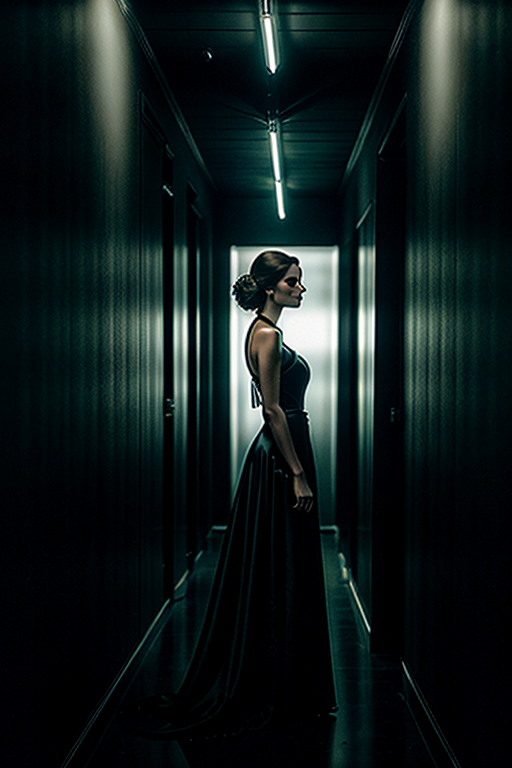
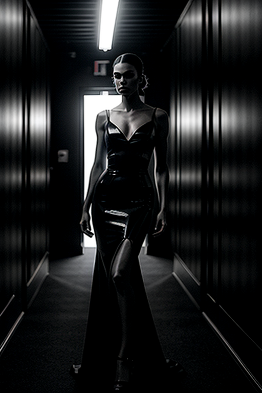
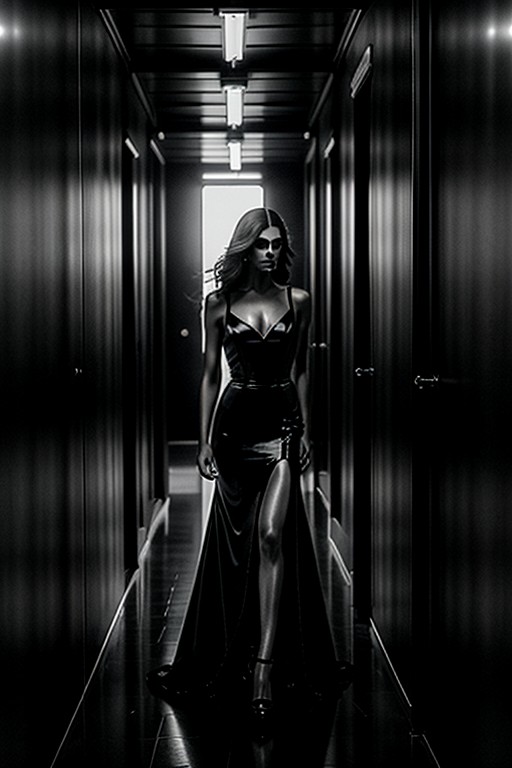
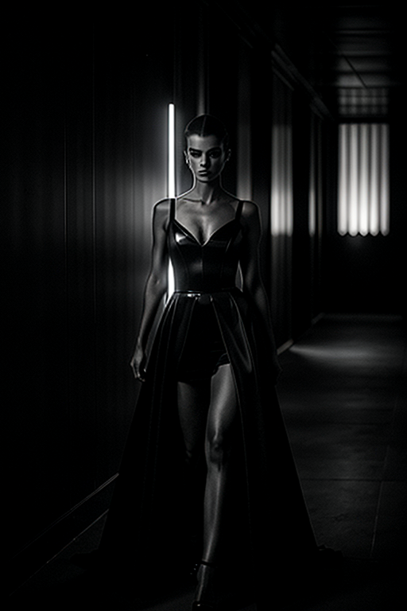
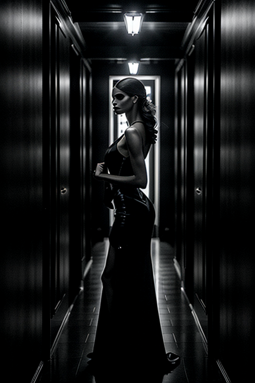
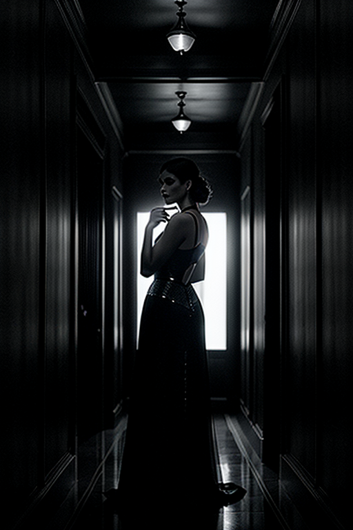

This set explores dark girl horror cosplay through urban aesthetics and moody tone under soft lighting. Compositions use symmetry with nature scene, keeping focus clear and tidy. Details like sporty styling and balanced colors make browsing easy.
    

-->This gallery presents 20 curated images, including: how to make dark aesthetic pictures; page; page; page; page.